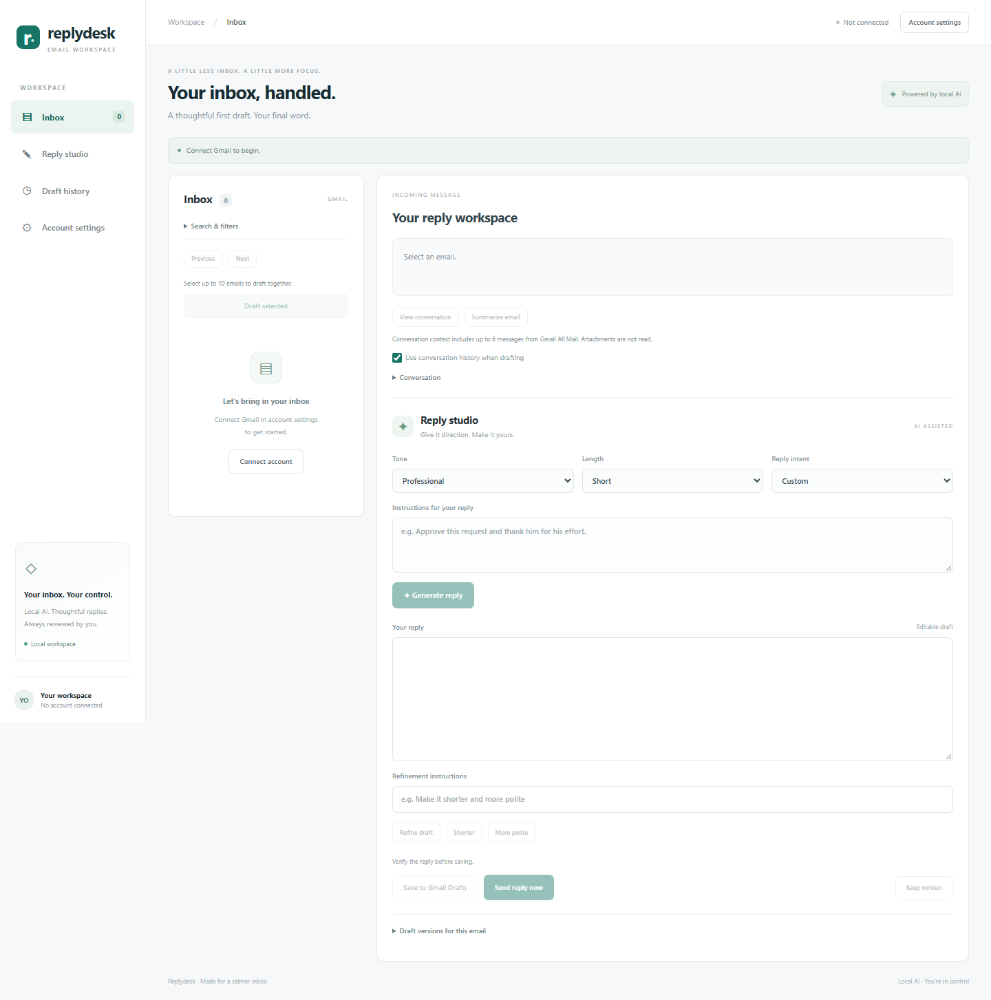

Reply Desk
A local email workspace that reads Gmail, drafts replies with Ollama, and lets you save or send a reviewed response. Built with FastAPI, React, and Vite.
AI generation runs on your computer using llama3.2:3b. No OpenAI API key or per-request AI fee is required; your computer provides processing, storage, and electricity.
Features
- Modern inbox and Reply studio with responsive layouts.
- Sender, subject, date, and unread filters; 20 messages per page.
- Professional, friendly, firm, and casual tone; short or detailed replies.
- Approve, decline, ask for details, acknowledge, or custom reply intent.
- Conversation context, email summaries, regeneration, and refinement.
- Profile, signature, editable drafts, and local version history.
- Sequential batch drafting for up to 10 selected messages.
- Save to Gmail Drafts or confirm and send directly through Gmail SMTP.
Screenshots
The desktop workspace and Reply studio:

View account settings and mobile screenshots. Screenshots use an unconnected session and a placeholder address; no private mailbox content is shown.
Requirements
- Windows 10/11 on x64 for the supplied portable Ollama setup scripts.
- Python 3.10 or newer; Node.js 22.12 or newer with npm.
- A Gmail or Google Workspace mailbox that permits IMAP and app-password access. Direct sending also requires SMTP access.
- A Google app password belonging to that mailbox. Do not use your normal account password.
- Internet for installation and Gmail. Local model generation does not need an external AI service.
- Several GB of free disk space for Python/Node dependencies, Ollama, and the approximately 2 GB model. CPU generation may take minutes.
Quick start
Clone the repository, then run these commands from its root in PowerShell:
git clone https://github.com/alizainappedology/reply-desk.git
cd reply-desk
powershell -ExecutionPolicy Bypass -File .\setup-app.ps1
powershell -ExecutionPolicy Bypass -File .\setup-local-ai.ps1
powershell -ExecutionPolicy Bypass -File .\start.ps1
The repository is private; cloning requires authorized GitHub access. setup-app.ps1 installs the backend in .venv, installs locked frontend dependencies, and creates the React production build. setup-local-ai.ps1 downloads the portable runtime and model into .local-ai.
Open Reply Desk, choose Account settings, enter your Gmail address and app password, and connect. Select an email, provide reply instructions, generate, and review the result. Use Save to Gmail Drafts for later review, or Send reply now to confirm immediate delivery.
For the existing local checkout:
cd 'C:\xampp\htdocs\Ai\Reply Desk'
powershell -ExecutionPolicy Bypass -File .\start.ps1
Documentation
| Guide | Contents |
|---|---|
| User guide | Connection, inbox, drafting, summaries, batches, versions, and sending |
| Architecture | Components, data flow, state, ports, and source map |
| API reference | Routes, request fields, examples, responses, and errors |
| Development | Setup, builds, tests, dependency changes, and contribution workflow |
| Privacy and security | Credentials, local storage, sending guarantees, and deployment boundaries |
| Troubleshooting | Gmail, Ollama, startup, browser, and delivery problems |
Verification
From the project root:
.\.venv\Scripts\python.exe -m unittest discover -s tests -v
cd frontend
npm test
npm run build
Backend tests mock Gmail and local AI; frontend tests exercise state and rendered React workflows. Tests do not send real email. Live account authentication, mailbox policy, and SMTP delivery require testing with your own account.
Current limits
This is a single-user app bound to loopback, not a public hosted service. Credentials and duplicate-send tracking are held in server memory. Reloading the browser currently resets its connected UI; restarting the server requires connecting again. Profile and draft history are stored in that browser, not synced across devices.
Attachments are not processed. Conversation context is limited to six messages, and long content is truncated. AI can misunderstand instructions or invent details, so review facts, recipients, and decisions before saving or sending. Batch generation never automatically saves or sends replies.